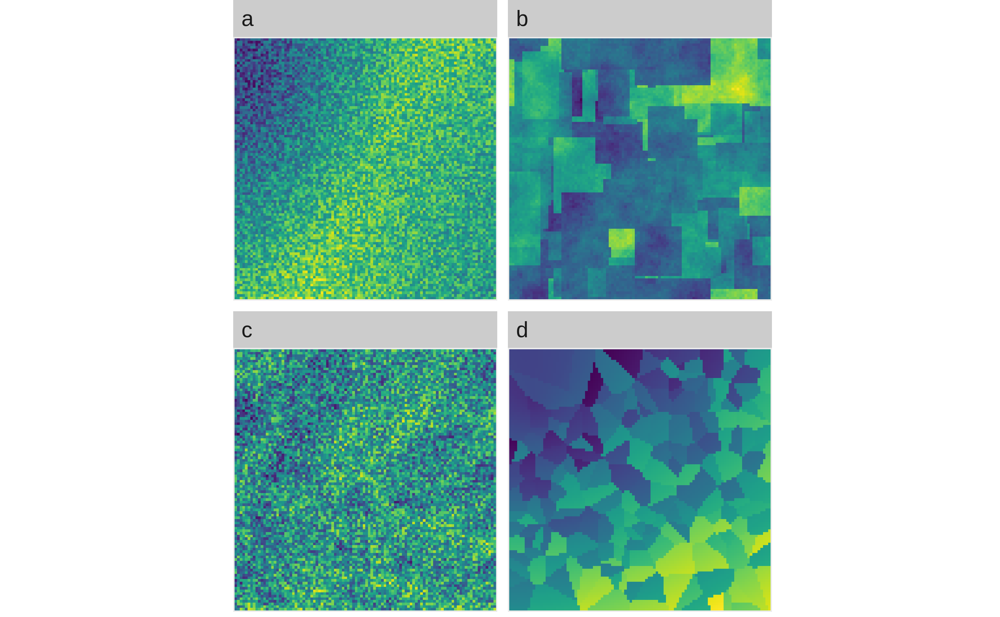
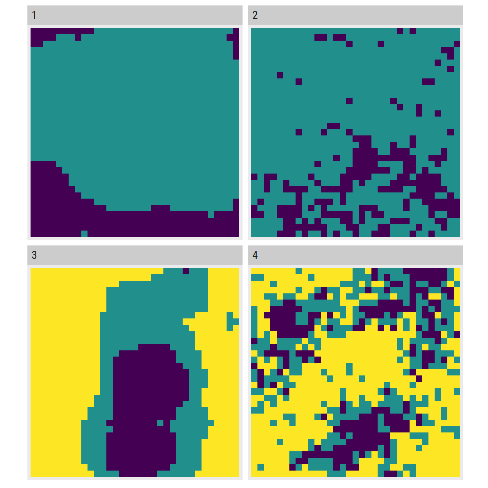
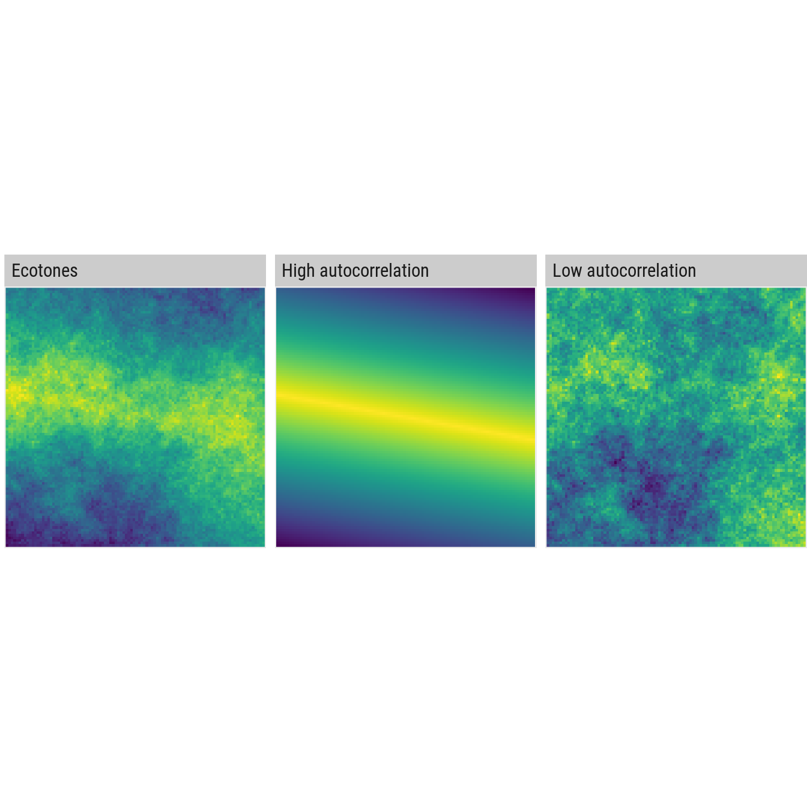

NLMR Overview and Tips
Marco Sciaini
2018-11-15
overview_tips.RmdOverview

Selection of possible merges
# 1.
edge_nlm <- nlm_edgegradient(100, 100)
distance_nlm <- nlm_distancegradient(100, 100, origin = c(20, 20,10, 10))
random_nlm <- nlm_random(100, 100)
# 2.
gauss_nlm <- nlm_gaussianfield(100, 100)
rectan_nlm <- nlm_randomrectangularcluster(100, 100, maxl = 30, minl = 10)
# 3.
mosaic_nlm <- nlm_mosaicfield(100, 100)
# 4.
planar_nlm <- nlm_planargradient(100, 100)
tess_nlm <- nlm_mosaictess(100, 100, germs = 200)
# plot it
landscapetools::util_facetplot(list("a" = landscapetools::util_merge(edge_nlm, list(distance_nlm, random_nlm)),
"b" = landscapetools::util_merge(gauss_nlm, rectan_nlm),
"c" = landscapetools::util_merge(mosaic_nlm, list(random_nlm)),
"d" = landscapetools::util_merge(planar_nlm, list(distance_nlm, tess_nlm))))
Tips
If you are new to the raster package, I hope to collect here some useful tips how to handle raster data in general. Furthermore, this section also serves as a place to collect workflows on how to use NLMR and other R packages to simulate specific patterns one can find in the literature.
Basics
Counting cells
Ecologists are for example often interested in how much habitat one actually finds in the study area you are looking at and there are a couple of nice ways to do that with rasters. One of them is:
library(NLMR)
library(raster)
library(dplyr)
landscape <- nlm_curds(curds = c(0.5, 0.3, 0.6),
recursion_steps = c(32, 6, 2),
wheyes = c(0.1, 0.05, 0.2))
# count cells for each category (0 = Matrix, 1 = Habitat)
landscape %>%
freq()## value count
## [1,] 0 103336
## [2,] 1 44120More specific tips
Use matrix of parameter to simulate landscapes
library(NLMR)
library(landscapetools)
library(raster)
library(dplyr)
library(purrr)
library(tibble)
# simulation function that has the parameters we want to alter as input
simulate_landscape = function(roughness, weighting){
nlm_mpd(ncol = 33,
nrow = 33,
roughness = roughness,
rescale = TRUE) %>%
util_classify(weighting = weighting)
}
# paramter combinations we are interested in
param_df = expand.grid(roughness = c(0.2, 0.9),
weighting = list(c(0.2, 0.8), c(0.2, 0.3, 0.5))) %>%
as.tibble()
# map over the nested tibble and use each row as input for our simulation function
nlm_list = param_df %>% pmap(simulate_landscape)
# look at the results
util_facetplot(nlm_list)
Simulate ecotones
Merging different types of NLMs, such as a planar gradient with a less autocorrelated landscape, provide a means of generating more complex landscapes and realistic-looking ecotones (Travis 2004):
library(NLMR)
library(landscapetools)
# landscape with higher autocorrelation
high_autocorrelation <- nlm_edgegradient(ncol = 100, nrow = 100, direction = 80)
# landscape with lower autocorrelation
low_autocorrelation <- nlm_fbm(ncol = 100, nrow = 100, fract_dim = 0.5)
# merge to derive ecotone
ecotones <- util_merge(low_autocorrelation, high_autocorrelation)
# look at the results
util_facetplot(list("Low autocorrelation" = low_autocorrelation,
"High autocorrelation" = high_autocorrelation,
"Ecotones" = ecotones
))